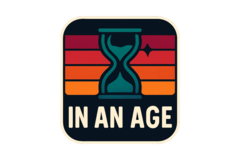
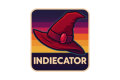
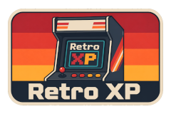
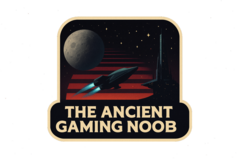
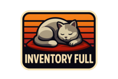

Azuriel finds Palworld 1.0 still the same compulsive ARK-like loop, only smoother, busier, and good enough to crowd out Hearthstone and Guild Wars 2.
Azuriel finds Palworld 1.0 still the same compulsive ARK-like loop, only smoother, busier, and good enough to crowd out Hearthstone and Guild Wars 2.
Magi flags Volcano Princess hitting consoles and mobile July 30 with updated translations, voice acting, new content, and a free Steam update later.
Marc revisits The House of the Dead and how Sega made zombies, branching paths, and multi-hit enemies stand out in crowded light-gun arcades.
Wilhelm tears into EVE Online’s Ansiblex jump-bridge capacitor changes, arguing the zone-based nullsec nerf turns travel into an unworkable mess.
Bhagpuss pivots from making a Zines Forever upload to musing on zines, archiving old work, and why the format still pulls so hard.